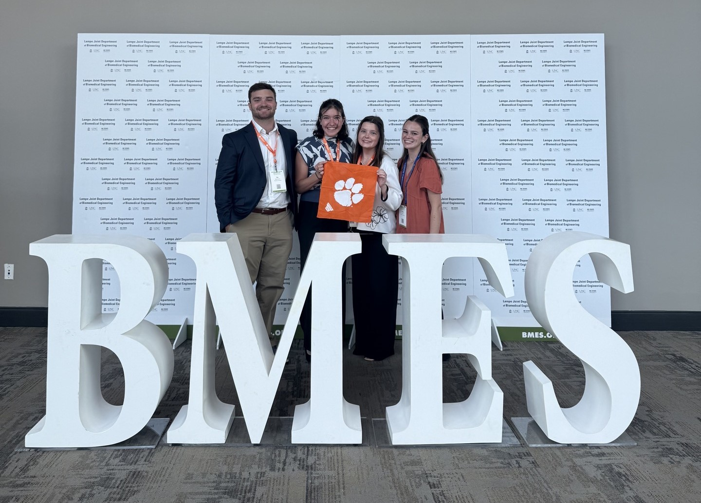
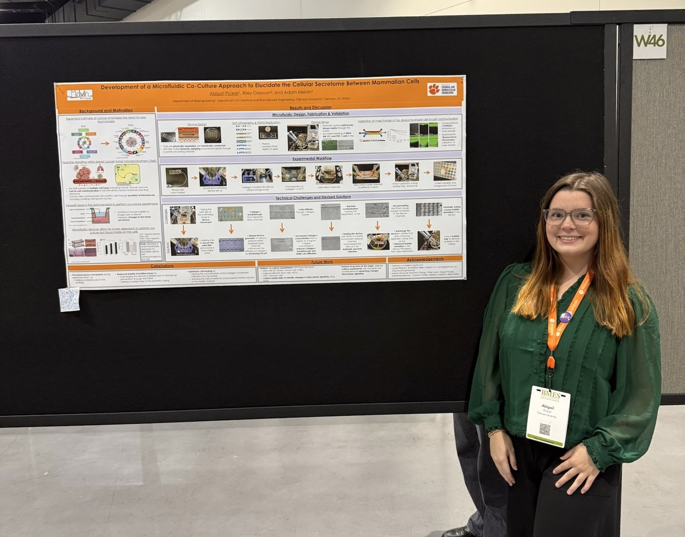
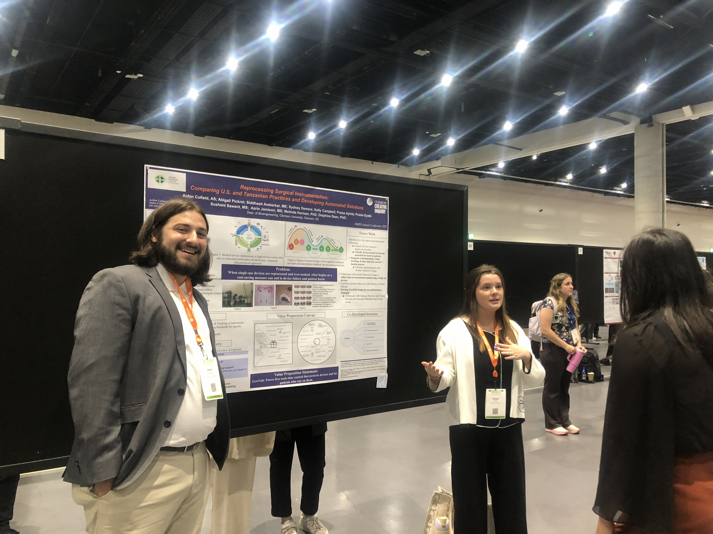
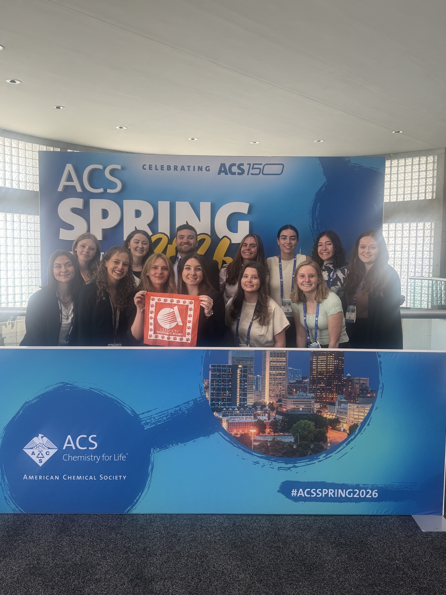

Research Experiences and Presentations
Citations Listed at the Bottom of the Page
EUREKA! 2023

Biotechnology and plant genetic engineering project in Dr. Hong Luo's lab - Joined through the Clemson Honors College EUREKA! 2023 cohort.
My work began online by reviewing literature on genetically modified plants and then continued in-person.
My lab work included caring for creeping bentgrass plant calluses and performing genetic transformations. These calluses would
become plants that the graduate students used for experiments to compare phenotypic changes.
Abstract Link: https://online.flippingbook.com/view/466484111/4/
EUREKA! 2024

Microfluidic co-culture project in Dr. Adam Melvin's lab - In 2024, I served as the head counselor of the
EUREKA! Program where I had the opportunity to mentor incoming honors students
and plan events. I joined Dr. Melvin's lab working with Microfluidic devices, learing design,
device fabrication, surface modification, cell culture, and microscopy.
Abstract link: https://online.flippingbook.com/view/644261531/28/
Focus On Creative Inquiry Poster Forum 2025
.JPG)
Presentation on a microfluidic approach to study pracrine signaling in the tumor microbiome.
.jpg)
Presentation on the global surgery creative inquiry group's work, learning about device reprocessing and collaborating on alternative designs.
Summer CI 2025
.jpg)
In the spring of 2025 I was a recipient of the Summer CI Scholarship which enabled me to continue my research in the Melvin Microlab throughout the summer. I was also unofficially working on the reprocessing device in Dr. Delphine Dean's lab in the afternoon (which I joined in Spring 2025). Throughout this summer, I was able to mentor a student from the SC Governor's School for Science and Mathematics. We primarily worked on device and protocol optimization and conducted experiments.
BMES 2025

Photo of the Melvin Microlab at BMES 2025.

Presentation on a microfluidic approach to studying cell-to-cell communication, or paracrine signaling, and the device design that was developed in the melvin microlab

Presenting on the work conducted through Dr. Delphine Dean's Global Surgery CI. In this CI, undergraduate students had the opportunity to connect with students, faculty, and healthcare professionals in Tanzania to learn more about international reprocessing protocols, particularly in low- and middle-income countries. We used this knowledge to compare protocols with those outlined in the United States by entities such as the FDA and EPA, test effectiveness through wet lab procedures, and develop our own technologies to address discrepencies in quality that could cause patient harm, such as burns from poor adhesion on reprocessed electrosurgical grounding pads.
ACS Spring 2026

Photo of Melvin Microlab Members at the ACS Spring 2026 Conference in Atlanta, GA.

Poster Presentation of algal chemitaxis research. Following the co-culture project project during the summer of 2025, I wanted to pursue a more independent research role. In the fall of 2025, I had only been on projects where I was mentored by a graduate student, and I wanted to push myself to take higher responsibility in my research. Dr. Melvin suggested that I lead a project applying a microfluidic device to generate an ammonia gradient in order to study algal chemotaxis.

.jpg)
My lab partner, Violet Lorei, and I had the opportunity to present a lightning talk where we delivered a 2 minute oral presentation detailing our research, accomplishments, and future directions.
Focus On Creative Inquiry Poster Forum 2026

At the 2026 FoCI symposium, I had the opportunity to present on the progress of the algal chemotaxis project.
.jpeg)
While not STEM research related, I had the incredible opportunity to present alongside several of my brightest peers that are passionate about history, policy, and supporting the local community. Throughout the semester, we had the opportunity to serve refugees in our community through home visits, volunteering in ESOL classes, and hosting events to celebrate their culture. We were able to quantify our impact through tracking volunteer hours and we presented on this work. I was so grateful to be a part of this project and organization.
Citations
Clemson Symposiums
*Pickrel, A., Candeo, J., Osbourn, R., Melvin, A. (2026, August 18). Development of a Flow-Free Microfluidic Gradient Generator to Study Algal Chemotaxis. [Poster]. 10th Annual Summer Creative Inquiry + Undergraduate Research Showcase, Clemson, SC.
*Pickrel, A., *Swatland, Z., Melvin, A., Osbourn, R. (2025, April). A Microscale Approach to Alucidate Paracrine Signaling Driving Cell-to-Cell Communication in the Microbiome. Poster presentation at the 8th Annual Clemson University Student Research Forum, Clemson, SC.
*Pickrel, A., Melvin, A., Osbourn, R. (2025, August). Development of a Microfluidic Co-Culture Approach to Elucidate the Cellular Secretome Between Mammalian Cells. Poster presentation at the 9th Annual Summer Creative Inquiry + Undergraduate Research Showcase, Clemson, SC.
*Campbell, K., *Cofield, R., *DeAngelo, I., *Demers, S., *Infante, C., *Mahaffey, E., *Maurio, M., *Pickrel, A., *Hause, E., *Ciprari, S., Amberkar, S., Carpenter, J., Nigoa, D., Robu, A., Villegas Jaramillo, A., Bhoothapuri, A., Patterson, J., Carmargo, M., Murphy, L., Jamison, A., Mallah, M., Harman, M., Dean, D.(2025, April). Engineering Innovations for Global Surgery: Clemson-MUSC Collaborative Creative Inquiry. Poster presentation at Clemson University 20th Annual Focus on Creative Inquiry Forum, Clemson, SC.
*Lorei, V., *Pickrel, A., Osbourn, R., Melvin, A. (2026, April 8-10). Development of a Flow-Free Microfluidic Gradient Generator to Study Algal Chemotaxis [Poster]. 21st Annual Focus on Creative Inquiry Forum, Clemson, SC.
*Campbell, K., *Cofield, R., *Kumarasinghe, R., *Mahaffey, E., *Pickrel, A., *Quirbach, E., *Ritzer, M., *Rodriguez, A., *Sederquist, J., Dean, D., Ayinla, P., Eyabi, P., Jamison, A., Sawant, S. (2026, April 8-10). Engineering Innovations for Global and Rural Health [Poster]. 21st Annual Focus on Creative Inquiry Forum, Clemson, SC.
*Alkelani, S., *Corwin, M., *Murray, B., *Palygina, L., *Patel, T., *Perkins, E., *Pickrel, A., *Polatty, E., *Turner, B., Naimou, A. (2026, April 8-10). Foodways, Memory and Belonging: An Oral History Project Within Clemson's Resettled Refugee Community [Poster]. 21st Annual Focus on Creative Inquiry Forum, Clemson, SC.
BMES
Pickrel, A., Osbourne, R., Melvin, A. Development of a Microfluidic Co-Culture Approach to Elucidate the Cellular Secretome Between Mammalian Cells. Poster presented at the annual meeting of the Biomedical Engineering Society, San Diego, CA.
Cofield, A., Pickrel, A., Amberkar, S., Jamison, A., Harman, M., Dean, D Reprocessing Surgical Instrumentation: Comparing U.S. and Tanzanian Practices and Developing Automated Solutions. Poster presented at the annual meeting of the Biomedical Engineering Society, San Diego, CA.
ACS
*Pickrel, A., *Lorei, V., Osbourn, R., Melvin, A. (2026, March 22-26). Development of a flow-free microfluidic gradient generator to investigate how varying ammonium gradients affect algal chemotaxis [Poster]. Poster presented at the annual meeting of the American Chemical Society, Atlanta, GA.